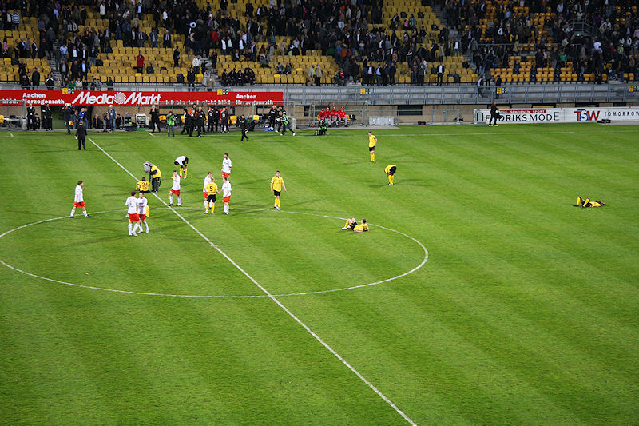

Het koempels-doek wordt van zolder gehaald nu de fusie niet door is gegaan.
Goldy heeft weer goed gescout....
Sporting-bobo's weg.... stadion vol!
De shooter-boys van Extreme zorgden voor een helse confetti-regen.
Een bijna surrealistische entourage gezien de harde werkelijkheid van een
degradatie-duel dat volgt.
Roda gooit de beuk erin en zet Volendam flink onder druk.
Cissé ziet zijn inzet van de lijn gehaald door een Volendammer.
Z16 was deze keer tot de nok gevuld.
Bodor neemt een lange pass van De Fauw in één keer op zijn schoen en
passeert doelman Verhoeven: 1-0, (26').

Scheids Wegereef maakt er een potje van door Volendam vier hoekschoppen op
rij te geven waarvan minstens de helft onterecht.
Blunder Bodor door onnodig de kuit van Bakens te trappen: rood!
Het eerste kantelpunt in deze wedstrijd.
De Wit krijgt zijn tweede gele kaart na een overtreding op Meeuwis en kan
ook inrukken. Tien tegen tien dus.

Roda ligt te pielen in de tweede helft en laat Volendam het spel maken. Toch
zijn er enkele gevaarlijk uitbraken van Roda, meest met Cissé
in de hoofdrol. Echter minimaal twee 24-karaats kansen worden gemist.
Het kon niet uitblijven. Roda speelt niet van eigen doel af. Dan is het
bijna logisch dat pinch-hitter Platje, de plaag van Roda, de gelijkmaker
scoort: 1-1, (83').
Roda knokt tot het eind, zonder resultaat. Trainer Van Veldhoven valt veel
te verwijten gezien zijn oliedomme wissel om Oper te vervangen
door Addo. Het inbrengen van de niet-ingespeelde Lachambre was in deze fase
te riskant. Verder kunnen er grote vraagtekens geplaatst
worden bij de zwaar tegenvallende Delorge waar De Wree beter op zijn plaats
was.

Grote teleurstelling. Nacompetitie lijkt nu nog het hoogst haalbare.
Fluitconcert in de Kickoff als Van Veldhoven aan het woord komt.
Dieptriest dat de Rodaspelers zich weer niet durfden laten blikken bij hun
supporters.
Vriendschapsclup KV Mechelen heeft de finale van de Belgische beker bereikt
en speelt komende maand de finale tegen Genk. Binnenkort
volgt info om deze wedstrijd te bezoeken.